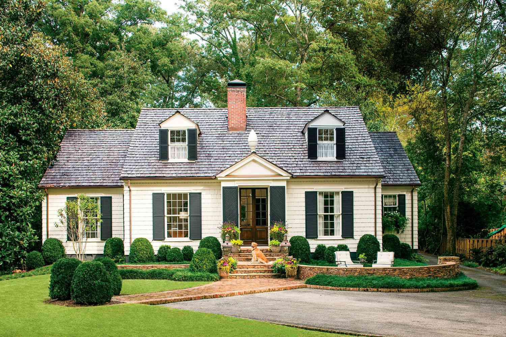
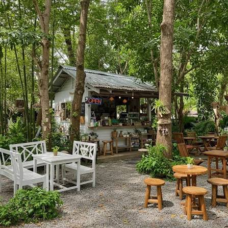
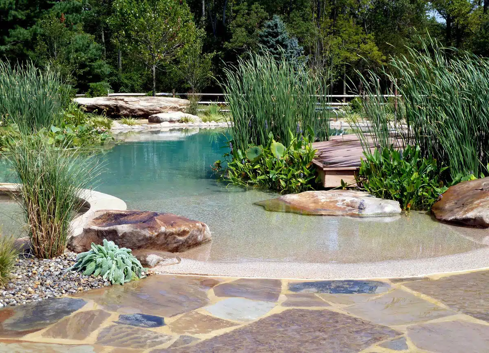
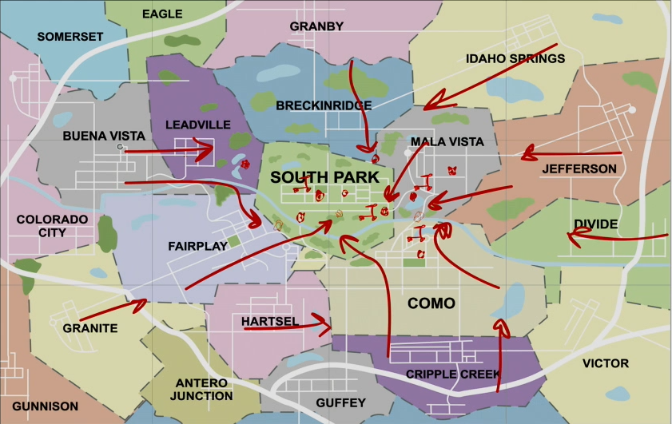

«Найбільше подобається відчуття простору та спокою. Тут легко перемикнутися після насиченого робочого дня».

«Південний Парк» — простір для життя, у якому хочеться залишатися. Це сучасне котеджне містечко, створене для тих, хто цінує комфорт, приватність і спокій заміського життя. Тут можна відпочити від міського ритму, бути ближче до природи та водночас мати все необхідне для зручного повсякденного життя.
Концепція «Південного Парку» побудована навколо відчуття власного простору. Продумане планування території, сучасна архітектура та затишне оточення формують середовище, де комфортно жити щодня, проводити час із родиною, працювати, відпочивати та зустрічати друзів.
«Південний Парк» — це більше, ніж будинок за містом. Це власний простір, власний ритм і нова якість життя. Тут починається дім, у якому добре жити.




Хочете дізнатися більше про будинки, інфраструктуру або умови придбання? Заповніть форму — наш менеджер зв’яжеться з вами.
Так. Залиште заявку у формі вище та оберіть тему «Запис на перегляд».
Проєкт передбачає зелені зони, дитячі й спортивні майданчики, місця відпочинку та локальні сервіси для мешканців.
У концепції містечка передбачені окремі соціальні програми та спеціальні умови для військовослужбовців і ветеранів.
Так. Вкажіть контактні дані у формі та коротко опишіть питання — менеджер зможе відповісти дистанційно.
«Найбільше подобається відчуття простору та спокою. Тут легко перемикнутися після насиченого робочого дня».
«Зручно, що поруч є місця для відпочинку, а територія виглядає цілісно й продумано».
«Для нашої родини важливі тиша, зелені зони та можливість проводити більше часу разом».
 Архітектор
Архітектор
Відповідає за архітектурну концепцію, планування будинків і гармонійне поєднання забудови з ландшафтом.
 Ландшафтна дизайнерка
Ландшафтна дизайнерка
Проєктує зелені зони, місця для прогулянок і відпочинку, щоб територія залишалася зручною в різні пори року.
 Менеджер спільноти
Менеджер спільноти
Допомагає мешканцям із побутовими питаннями, організовує спільні події та підтримує комунікацію всередині містечка.
Основні етапи створення «Південного Парку» — від ідеї до формування повноцінної спільноти.
Сформовано бачення сучасного котеджного містечка з акцентом на приватність, природу та комфорт.
Розроблено схему житлових кварталів, зелених зон, маршрутів і майбутньої інфраструктури.
Розпочато основні будівельні роботи, облаштування території та підготовку громадських просторів.
Додаються сервіси для мешканців, соціальні програми, події та нові можливості для відпочинку.
Соціальні програми
Наше містечко створене для комфортного та безпечного життя всієї родини. Ми прагнемо розвивати не лише житловий простір, а й дружню спільноту, у якій кожен мешканець почуватиметься затишно.
Для жителів передбачені програми підтримки молодих сімей, спеціальні умови для військовослужбовців та ветеранів, а також можливість участі у спільних екологічних і благодійних ініціативах.
На території містечка планується облаштування дитячих і спортивних майданчиків, зелених зон для відпочинку та місць для проведення спільних заходів. Особлива увага приділяється доступності, безпеці та створенню комфортного середовища для людей різного віку.